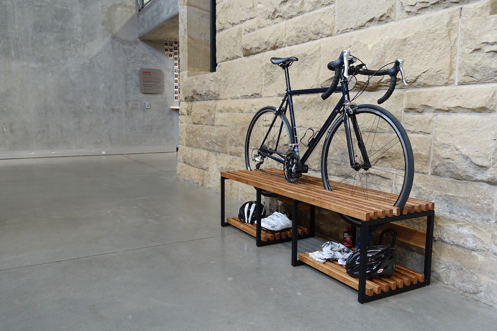

Bike Bench
Spring 2015 · Stanford, CA
Overview
At Stanford, ME 203: Design and Manufacturing is a rite of passage for mechanical engineering and product design students. The class throws you headfirst into Stanford's Product Realization Lab to manufacture a product of your own design using machining sand casting, or welding.
Role
Designed bench, moving from initial ideas through prototyping and some CAD. Manufactured bench from steel tubing and cherry wood, primarily using welding and woodworking processes.
Scope
6 weeks
Categories
Product design, Protoyping, CAD, Welding, Woodworking
